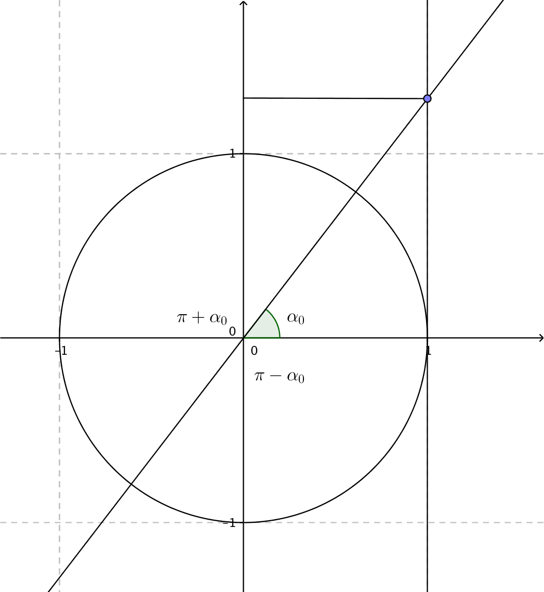

7. Ekvationer med tangens
I föregående kapitel lärde vi oss att tantentpunkten ger tangens för en vinkel. Vi bygger vidare på det för att lösa ekvationer med tangens.
Ekvationen \( \tan \alpha = a \)
För ekvationen \( \tan \alpha =a \) kommer vi ihåg att en lösning är tangenspunkten, den punkt som vi hittar då vi går vidare från periferipunkten mot linjen \( x=1 \).
Då vi fortsätter på linjen bort från tangenspunkten märker vi att det finns två vinklar som ger samma värde för tangens. Vinklarna \( \alpha \) och \( \pi +\alpha \).

De vinklar som löser ekvationen \( \tan \alpha = a \) är vinklar som är multiplar av \( \alpha_0 \) med multipeln \( \pi \).
Lösningarna för ekvationen \( \tan \alpha =a \) kan vi skriva som
\( \alpha =\alpha_0 +n\cdot 180^{\circ} \) där n är ett heltal eller som
\( \alpha =\alpha_0 +n\cdot \pi \) där n är ett heltal.
Lösning
Tangens är definierad då \( x\not= \dfrac{\pi}{2} +n\cdot \pi \) där \( n \in \mathbf{Z} \).
Vinkeln får vi med räknarens funktion, tan-1(1).
Vinkeln är \( x=45^{\circ} +n\cdot 180^{\circ}, n\in \mathbf{Z} \).
Lösning
Först söker vi definitionsmängderna.
\( \tan 2x \) är inte definierad då \( 2x = \dfrac{\pi}{2} +n\cdot \pi \). Alltså då \( x = \dfrac{\pi}{4}+n\cdot \dfrac{\pi}{2} \).
\( \tan 3x \) är inte definierad då \( 3x = \dfrac{\pi}{2} +n\cdot \pi \). Alltså då \( x = \dfrac{\pi}{6}+n\cdot \dfrac{\pi}{3} \).
Vi löser ekvationen
\( \begin{array}{rcll} 2x & = & 3x +n\cdot \pi \\ -x & = & n\cdot \pi & | \text{ n är ett heltal}\\ & = & n\cdot \pi \\ \end{array} \)
De förbjudna punkterna är
\( \begin{array}{r|r|r} n & x\not= \dfrac{\pi}{4}+n\cdot \dfrac{\pi}{2} & x\not= \dfrac{\pi}{6}+n\cdot \dfrac{\pi}{3} \\ \hline 0 & \dfrac{\pi}{4} & \dfrac{\pi}{6} \\ 1 & \dfrac{\pi}{4}+1\cdot \dfrac{\pi}{2}=\dfrac{3\pi}{4} & \dfrac{\pi}{6}+1\cdot \dfrac{\pi}{3}=\dfrac{3\pi}{6} \\ 2 & \dfrac{\pi}{4}+2\cdot \dfrac{\pi}{2}=\dfrac{5\pi}{4} & \dfrac{\pi}{6}+2\cdot \dfrac{\pi}{3}=\dfrac{5\pi}{6} \\ 3 & \dfrac{7\pi}{4} & \dfrac{7\pi}{6} \\ 4 & \dfrac{9\pi}{4} =2\pi +\dfrac{\pi}{4} & \dfrac{9\pi}{6}\\ 5 & & \dfrac{11\pi}{6}\\ 6 & & \dfrac{13\pi}{6}= 2\pi +\dfrac{\pi}{6}\\ \end{array} \)
Lösningarna för ekvationen är \( \pi, 2\pi, 3\pi,\ldots \). Vi märker att bland lösningarna för ekvationen finns inga förbjudna punkter. Lösningarna är \( x=n\cdot \pi, n\in \mathbf{Z} \).
Lösning
Vi har att
\( \begin{array}{rcll} 2\sin\alpha-5\cos\alpha & = & 0 \\ 2\sin\alpha & = & 5\cos\alpha & | / 2\cos\alpha \not=0 \\ \dfrac{\sin\alpha}{\cos\alpha} & = & \dfrac{5}{2} \\ \tan \alpha & = & \dfrac{5}{2} \\ \end{array} \)
Vinkeln är \( \alpha = 68,2^{\circ}+n\cdot 180^{\circ}, n \in \mathbb{Z} \).
Lösning
Då \( \tan\alpha=-\dfrac{2}{3} \) ger oss det att i en rätvinklig triangel är kateterna 2 och 3 långa, hypotenusan är då \( \sqrt{2^2+3^2}=\sqrt{13} \).
Vi får då för den ena spetsiga vinkeln att \( \mid\sin \alpha \mid = \dfrac{2}{\sqrt{13}} \) och att \( \mid\cos \alpha \mid= \dfrac{3}{\sqrt{13}} \).
Eftersom \( \dfrac{\pi}{2} < \alpha < \pi \) är \( \sin > 0 \) och \( \cos <0 \).
Vi får att \( \sin \alpha = \dfrac{2}{\sqrt{13}} \) och \( \cos\alpha = -\dfrac{3}{\sqrt{13}} \).
Sammanfattning
- Ekvationen \( \tan x = a \) har lösningarna \( x=\alpha +n\cdot \pi \) där n är ett heltal.
- För ekvationen \( \tan x = \tan y \) gäller att \( x=y+ +n\cdot \pi \) där n är ett heltal.
Uppgifter
- Lös följande ekvationer
- \( \tan \alpha = 2 \)
Vinkeln är som grader:\( \alpha = 63,4^{\circ}+n\cdot 180^{\circ}, n \in \mathbb{Z} \), som radianer: \( \alpha = 1,1 +n\pi, n \in \mathbb{Z} \).
- \( \tan \alpha = -1 \)
Vinkeln är som grader:\( \alpha = -45^{\circ}+n\cdot 180^{\circ}, n \in \mathbb{Z} \), som radianer: \( \alpha = \dfrac{\pi}{4} +n\pi, n \in \mathbb{Z} \).
- \( \tan \alpha = 2 \)
- Bestäm \( \tan x = \tan 3x \).
\( \tan x \) är definierad för alla vinklar förutom då \( x=\dfrac{\pi}{2} +n\pi \).
\( \tan 3x \) är definierad för alla vinklar förutom då \( 3x=\dfrac{\pi}{2} +n\pi \), alltså \( x=\dfrac{\pi}{6} +n\dfrac{\pi}{3} \).
För ekvationen gäller
\( \begin{array}{rcll} x & = & 3x +n\cdot \pi \\ -2x & = & n\cdot \pi & | /-2\\ x & = & -n\cdot \dfrac{\pi}{2} & |\text{ n är ett heltal}\\ & = & n\cdot \dfrac{\pi}{2}\\ \end{array} \)
De förbjudna vinklarna är
\( \begin{array}{r|r|r} n & x\not=\dfrac{\pi}{2} +n\pi & x\not=\dfrac{\pi}{6} +n\dfrac{\pi}{3} \\ \hline 0 & \dfrac{\pi}{2} & \dfrac{\pi}{6} \\ 1 & \dfrac{\pi}{2} +1\cdot\pi = \dfrac{3\pi}{2} & \dfrac{\pi}{6} +1\cdot\dfrac{\pi}{3} =\dfrac{3\pi}{6}\\ 2 & \dfrac{\pi}{2} +2\cdot\pi = \dfrac{5\pi}{2} & \dfrac{\pi}{6} +2\cdot\dfrac{\pi}{3} =\dfrac{5\pi}{6}\\ 3 & & \dfrac{\pi}{6} +3\cdot\dfrac{\pi}{3} =\dfrac{7\pi}{6}\\ 4 & & \dfrac{9\pi}{6}\\ 5 & & \dfrac{11\pi}{6}\\ 6 & & \dfrac{13\pi}{6}\\ \end{array} \)
De förbjudna vinklarna och våra rötter har några gemensamma punkter, \( \dfrac{\pi}{2}+n\cdot \pi \)
Ekvationens lösningar är \( n\cdot \pi, n\in \mathbb{Z} \).
- Bestäm \( \tan 2x = \tan \dfrac{x}{2} \).
\( \tan 2x \) är definierad för alla vinklar förutom då \( 2x=\dfrac{\pi}{2} +n\pi \), alltså \( x=\dfrac{\pi}{4} +n\cdot\dfrac{\pi}{2} \).
\( \tan \dfrac{x}{2} \) är definierad för alla vinklar förutom då \( \dfrac{x}{2}=\dfrac{\pi}{2} +n\pi \), alltså \( x=\pi +n\cdot2\pi \).
För ekvationen gäller
\( \begin{array}{rcll} 2x & = & \dfrac{x}{2} +n\cdot \pi \\ 2x-\dfrac{x}{2} & = & n\cdot \pi \\ \dfrac{3x}{2} & = & n\cdot \pi & | \cdot \dfrac{2}{3}\\ x & = & n\cdot \dfrac{2\pi}{3} \\ \end{array} \)
De förbjudna vinklarna är
\( \begin{array}{r|r|r} n & x\not=\dfrac{\pi}{4} +n\cdot\dfrac{\pi}{2} & x\not=\pi +n\cdot2\pi \\ \hline 0 & \dfrac{\pi}{4} & \pi \\ 1 & \dfrac{\pi}{4} +1\cdot\dfrac{\pi}{2} = \dfrac{3\pi}{4} & \pi +1\cdot2\pi=3\pi\\ 2 & \dfrac{\pi}{4} +2\cdot\dfrac{\pi}{2} = \dfrac{5\pi}{4} & \\ 3 & \dfrac{\pi}{4} +3\cdot\dfrac{\pi}{2} = \dfrac{7\pi}{4} & \\ 4 & \dfrac{\pi}{4} +4\cdot\dfrac{\pi}{2} = \dfrac{9\pi}{4} & \\ \end{array} \)
Lösningarna är \( 0, \dfrac{2\pi}{3}, \dfrac{4\pi}{3}, \dfrac{6\pi}{3} = 2\pi, \dfrac{8\pi}{3}, \dfrac{10\pi}{3}, \dfrac{12\pi}{3}=4\pi \ldots \).
Ekvationens lösningar är \( x=n\cdot\dfrac{2\pi}{3} \) där \( n\in \mathbb{Z} \).
- Lös ekvationen \( \sqrt{3}\sin \alpha - \cos \alpha = 0 \).
\( \begin{array}{rcll} \sqrt{3}\sin\alpha-\cos\alpha & = & 0 \\ \sqrt{3}\sin\alpha & = & \cos\alpha & \mid / \sqrt{3}\cos\alpha \not=0 \\ \dfrac{\sin\alpha}{\cos\alpha} & = & \dfrac{1}{\sqrt{3}} \\ \tan \alpha & = & \dfrac{1}{\sqrt{3}} \\ \end{array} \)
Vinkeln är \( \alpha = 30^{\circ}+n\cdot 180^{\circ}, n \in \mathbb{Z} \).
- Lös ekvationen \( 7\sin \alpha + 3\cos \alpha = 0 \).
\( \begin{array}{rcll} 7\sin\alpha+3\cos\alpha & = & 0 \\ 7\sin\alpha & = & -3\cos\alpha & \mid / 7\cos\alpha \not=0 \\ \dfrac{\sin\alpha}{\cos\alpha} & = & -\dfrac{3}{7} \\ \tan \alpha & = & -\dfrac{3}{7} \\ \end{array} \)
Vinkeln är \( \alpha = -23,2^{\circ}+n\cdot 180^{\circ}, n \in \mathbb{Z} \).
- Lös ekvationen \( \tan \alpha = \tan (2\alpha + \dfrac{\pi}{2}) \).
Vi börjar med att undersöka vilka rötter som inte duger: \( \alpha \not= \dfrac{\pi}{2} +n \cdot \pi \) eller \( 2\alpha + \dfrac{\pi}{2} \not= \dfrac{\pi}{2}+n\cdot \pi \Leftrightarrow \alpha \not= n\cdot \pi \) där \( n \in \mathbb{Z} \).
Vi får att
\( \begin{array}{rcl} \alpha & = & 2\alpha + \dfrac{\pi}{2} + n\pi\\ -\alpha & = & \dfrac{\pi}{2} + n\pi \\ \alpha & = & -\dfrac{\pi}{2} + n\pi \\ \end{array} \)
Vi får lösningar som inte är definierade. Ekvationen saknar lösningar.
- Bestäm först definitionsmängd för ekvationen. Lös sedan ekvationen \( \tan \alpha=\tan (2\alpha +\pi) \).
Definitionsmägden är
\( \alpha \not=\dfrac{\pi}{2} +n\pi \) och \( 2\alpha + \pi \not= \dfrac{\pi}{2}+n\pi \Leftrightarrow 2\alpha \not = -\dfrac{\pi}{2} + n\pi \Leftrightarrow \alpha \not= -\dfrac{\pi}{4}+n\dfrac{\pi}{2}, n\in \mathbb{Z} \).Sedan löser vi ekvationen
\( \begin{array}{rcl} \alpha & = & 2\alpha +\pi + n\pi \\ -\alpha & = & \pi + n\pi \\ \alpha & = & -\pi -n\pi \quad,n\in \mathbb{Z} \quad \text{Alltså}\\ \alpha & = & -\pi +n\pi \quad,n\in \mathbb{Z}\\ \end{array} \)
Eftersom n är ett heltal är \( n\cdot \pi - \pi = n\cdot \pi \).
Ekvationens lösningar är \( \alpha = n\cdot \pi , \quad n \in \mathbb{Z} \).